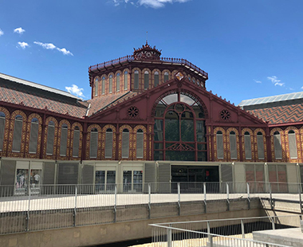
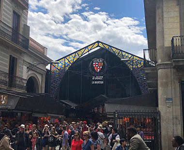
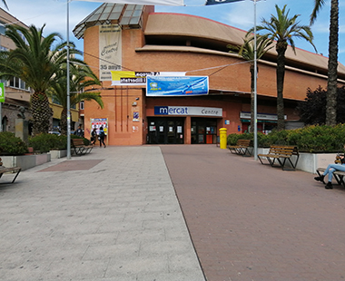

GASTRONOMIA
MERCAT DE SANT ANTONI

El Mercat de Sant Antoni va ser construït al 1879 per l’arquitecte Antoni Rovira.
És un mercat d’alimentació, situat a l’eixample de Barcelona.
Aquest mercat també es molt famós perquè sempre s’han trobat restes arqueològiques, l’ultima investigació va ser al 2012, perquè es van trobar restes d’un tren de Madrid de la segona meitat del segle XIX.Com arribar
LA BOQUERIA

El Mercat la Boqueria va ser inagurat al 1840 per l’arquitecte Josep Mas, és un mercat al costat de la Rambla de Barcelona amb 2.583 m².
Aquest mercat té més de 300 parades amb molta varietat de productes. És el segon mercat més gran de Catalunya i el més visitat pels turistes.
Com arribar
MERCAT CENTRE

El Mercat Centre s’estructura en dos pisos, hi han entrades laterals que donen a la planta baixa del mercat. El mercat està fet amb materials simples i industrials.
En aquest mercat pots trobar tot tipus de botigues d’alimentacióCom arribar